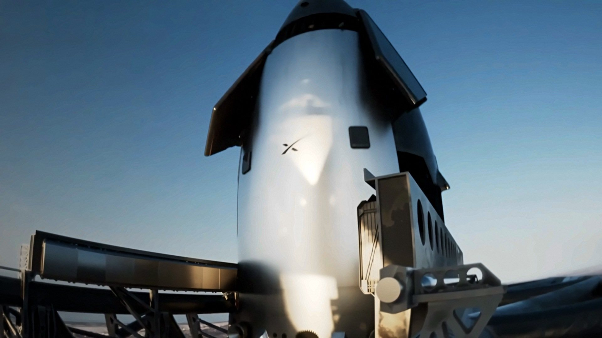
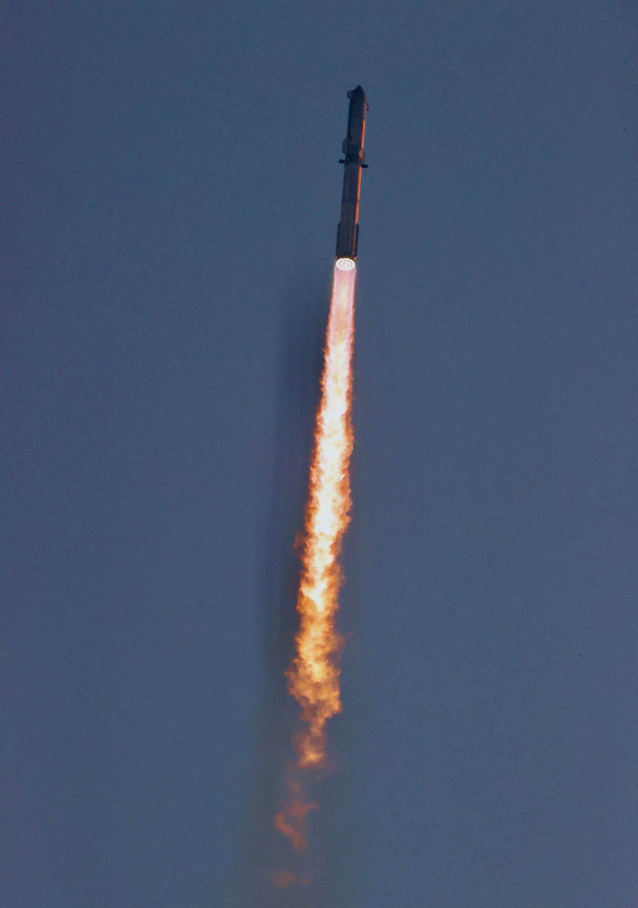
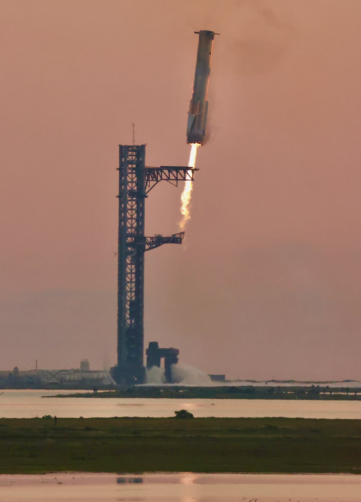

Il 7 novembre 2026 SpaceX ha fatto quello che mancava da giorni: ha messo online la pagina ufficiale di Starship Flight 15 e, insieme, un aggiornamento intero sul ritorno della nave al sito di lancio. La data è ora scritta dall'azienda, non solo detta da un dirigente o letta sulle slide di coordinamento aereo: il volo è previsto non prima di venerdì 13 novembre, con una finestra di 75 minuti che si apre alle 16:45 ora del Texas, le 23:45 in Italia. Resta una condizione, ripetuta in apertura: serve il via libera regolatorio.
Che cosa ha pubblicato SpaceX il 7 novembre
Il messaggio sul profilo ufficiale è asciutto: «Starship is preparing for catch», Starship si prepara alla presa. Subito sotto, l'azienda indica che Flight 15 punta a decollare «as early as Friday, November 13, pending regulatory approval»: non prima di venerdì 13 novembre, in attesa dell'ok dei regolatori. La pagina di missione aggiunge l'orario che finora non c'era. La finestra dura 75 minuti e si apre alle 16:45 ora centrale americana, le 17:45 sulla costa est, le 23:45 in Italia. Una diretta dovrebbe cominciare circa mezz'ora prima del decollo, su spacex.com e sul profilo SpaceX, e proseguire fino al catch della Ship, con la possibilità di ore di riprese dal veicolo in orbita, collegate via Starlink.
Non è più solo una data obiettivo detta il 5 novembre da Kiko Dontchev, vicepresidente dei lanci, sul palco dell'UP.Summit. Quel giorno era la prima volta che un dirigente operativo metteva un giorno sul tavolo. Due giorni dopo SpaceX conferma la stessa data, pubblica l'ora, descrive il profilo al minuto e spiega, con un testo dedicato, come intende far volare la nave sopra zone abitate del Messico settentrionale e del Texas meridionale per riportarla a Starbase.
L'obiettivo dichiarato è netto. Il volo «is planned to be the first to return both Starship and Super Heavy to the launch site for catch»: dovrebbe essere il primo a riportare entrambi gli stadi al sito di lancio per la presa con la torre. Se la manovra riuscirà, scrive SpaceX, sarà «the first full recovery of an orbital launch system», il primo recupero completo di un sistema di lancio orbitale, e «a breakthrough moment» verso un razzo affidabile e rapidamente riutilizzabile.

Un volo di più di 22 ore e 26 Starlink V3
Il profilo non assomiglia più ai voli brevi delle prime prove, né alle poche ore di Flight 14. La missione di ritorno al sito è pensata per un'orbita a circa 275 chilometri di quota, con circa 14 giri intorno alla Terra in più di 22 ore. La nave parte comunque su una traiettoria suborbitale «passivamente sicura», la stessa usata per il primo volo orbitale: se qualcosa va storto in salita, rientra su un'area già sgomberata nell'Oceano Indiano. Solo dopo un «go» dei controllori accende di nuovo i motori, con un singolo Raptor a livello del mare, e entra in orbita.
In orbita deve fare il lavoro per cui Starship è stata costruita: mettere in funzione un carico utile. SpaceX prevede il rilascio di 26 satelliti Starlink V3. Ciascuno, scrive l'azienda, aggiungerà 1 terabit di capacità alla costellazione; i 26 insieme equivalgono a circa dieci lanci di Starlink V2 Mini su Falcon 9. Dopo il distacco i satelliti apriranno antenne e pannelli solari, prenderanno contatto con terra e con il resto della rete via radio e collegamenti laser, e poi alzeranno l'orbita con i propri propulsori. Se i controlli andranno bene, potranno iniziare a servire i clienti già a poche settimane dal lancio.
Tre satelliti sono stati modificati con telecamere per scansionare lo scudo termico della nave e inviare le immagini a terra. Il metodo è già stato provato nei voli precedenti ed è una delle fonti con cui i controllori decideranno se la Ship può tornare a Starbase. Lo scudo porta i miglioramenti di Flight 14: tenute extra sulle mattonelle più a rischio di staccarsi in salita, interventi sui percorsi che potevano far passare il plasma dietro le piastrelle, e una porzione ampia di scudo con mattonelle curve, studiate per ridurre il riscaldamento negli interstizi.

Due prese, a sei minuti e a un giorno di distanza
Il Super Heavy ha un compito preciso: salita, separazione a caldo, accensione di ritorno e presa alla torre. SpaceX precisa che sarà il primo tentativo di catch di un Super Heavy della versione V3. I tre recuperi già riusciti, sui voli 5, 7 e 8, riguardavano booster di prima generazione; due di quelli hanno poi volato di nuovo. La sequenza pubblica mette la presa del primo stadio a circa 6 minuti e 35 secondi dal decollo.
La nave spegne i motori di salita a circa 8 minuti, entra in orbita dopo un'accensione di una ventina di secondi a T+26 minuti, e dovrebbe rilasciare i satelliti fra T+35 minuti e T+1 ora e 18 minuti circa. Poi comincia la lunga attesa. I controllori hanno tre appuntamenti scritti per decidere se la nave può ancora tornare a casa o deve puntare il mare: un'opzione precoce vicino alle Hawaii, una a metà missione al largo del Cile e una tardiva, di nuovo alle Hawaii. Sono le stesse aree già usate su Flight 14.
Se i requisiti restano verdi, l'accensione di deorbit parte a circa 21 ore e 36 minuti, con un singolo Raptor 3. Il rientro è indicato intorno a 22 ore e 11 minuti; la presa della Ship a 22 ore, 32 minuti e 34 secondi, dopo il passaggio da tre motori a due e poi a uno. Tra il catch del booster e quello della nave passano quindi più di 22 ore: non è una doppia presa simultanea, è una giornata intera in cui la torre deve prima chiudere le braccia sul primo stadio e, il giorno dopo, riaprirle per la Ship.
Ship 42, i cui static fire SpaceX ha dichiarato conclusi il 28 ottobre (un motore per simulare il rientro, poi sessanta secondi a sei motori), è il veicolo superiore preparato per questo volo. Il 25 ottobre l'azienda aveva già comunicato lo static fire di durata piena a 33 motori del Super Heavy destinato a Flight 15.

Il rientro sopra la terra e le vie di uscita
Finora ogni Starship ha chiuso la missione con un ammaraggio: rientro sopra oceani disabitati, verso un punto prefissato in acqua. Quei voli, scrive SpaceX, hanno dimostrato salita, manovre in spazio, rilascio di carichi e la capacità di rientrare con la precisione necessaria per una presa. Hanno anche spinto scudo, controlli e struttura oltre un rientro nominale verso il sito, togliendo di proposito decine di mattonelle e caricando i flap più del dovuto. L'azienda sostiene di aver così dimostrato che Starship può sopravvivere al rientro e raggiungere il punto previsto, con un margine di sicurezza.
Per tornare a Starbase, però, la nave deve sorvolare zone abitate del Messico settentrionale e del Texas meridionale. Non è una novità nella storia del volo spaziale: SpaceX ricorda che ogni missione dello Shuttle, dal 1981 al 2011, rientrava sopra terra, e che lo stesso hanno fatto Dragon verso la Florida (2020-2025), oltre a Soyuz e Shenzhou verso Kazakistan e Cina. Ora tocca a Starship, dopo i rientri oceanici di prova.
Il «go» per il ritorno a casa non è automatico. I controllori lo daranno solo se lo stato del veicolo soddisfa condizioni elaborate internamente e approvate dalla Federal Aviation Administration per il ritorno al sito e per la presa. Durante le ore in orbita i controlli, volutamente conservativi, riguardano la salute dei Raptor, eventuali perdite di energia o di comunicazioni, i computer di bordo e i sensori di navigazione, l'integrità di serbatoi e linee, la pressione e il controllo d'assetto. Se qualcosa non torna, restano le uscite verso il Pacifico: Hawaii all'inizio e alla fine, Cile a metà strada.
Anche durante il rientro ci sono porte di emergenza. I controllori possono interrompere la discesa e far tumulare di proposito la nave, in modo che si spezzi in atmosfera prima di raggiungere la terra. C'è poi un'opzione tardiva: se dopo il rientro un sistema della nave, o la torre stessa, non è in condizione di chiudere una presa sicura, la Ship può essere inviata nel Golfo, al largo di Starbase.

Come sarà, e come suonerà, il catch della Ship
Se il deorbit viene autorizzato, un singolo Raptor 3 cambia la traiettoria e mette la nave su un punto di rientro prefissato nel Pacifico, a migliaia di chilometri a ovest di Starbase. In atmosfera i quattro flap di controllo servono a tenersi su una rotta nota e precisa, e a eseguire una serie di piccole virate per passare sopra aree poco popolate del Messico settentrionale e del Texas meridionale. SpaceX descrive l'arrivo da ovest: la nave si fa largo intorno alle città principali della valle del Rio Grande, passa a nord di South Padre Island, esce sul Golfo e poi piega a sud verso Starbase. Questa virata in banco, precisa l'azienda, è già stata dimostrata più volte nei voli di prova.
Nella contea di Cameron e nelle zone vicine i residenti potranno sentire uno o più boom sonici, un rumore breve simile a un tuono, prodotto quando il veicolo vola più veloce del suono. SpaceX scrive che il fenomeno non presenta un rischio per la salute e che ciò che si sente dipende dal meteo e da altre condizioni.
Sopra Starbase la nave esegue l'ultima manovra a pancia in giù, il «bellyflop» verso la torre del Pad 2, già provato nei salti ad alta quota e nei voli suborbitali. Poco prima della torre accende i tre Raptor a livello del mare e si raddrizza, ripiegando i flap. Poi riduce i motori da tre a due e si inserisce fra i bracci meccanici; infine resta su un solo motore, quasi in hover. I bracci si chiudono in fretta sui due punti di presa appena sotto i flap anteriori. Quando la nave registra il contatto, spegne l'ultimo Raptor.
SpaceX chiama questo traguardo «the Holy Grail of rocketry», il Santo Graal della missilistica: recuperare interamente un sistema di lancio orbitale, cosa mai fatta, per arrivare a un ritmo di volo più simile a quello di un aereo. Se booster e nave tornano entrambi, si apre la strada al passo successivo già indicato da Elon Musk: un Flight 16 in cui entrambi gli stadi volano di nuovo.
Cosa manca ancora: l'ok regolatorio
La distinzione conta. SpaceX scrive che le condizioni per autorizzare il ritorno della nave e la presa sono state approvate dalla FAA. Non è la stessa cosa di una licenza di lancio già pubblicata. La pagina di missione ripete che il volo resta «pending regulatory approval». Senza quel documento non si decolla, e soprattutto non si impegna una traiettoria di rientro verso terra. Come per tutti i lanci, il calendario «is dynamic and likely to change».
I veicoli, sul piano delle prove a banco, sono pronti da fine ottobre. Quello che il 7 novembre cambia è il livello di dettaglio pubblico: c'è una pagina ufficiale, c'è un'ora, c'è la cronologia del volo e c'è la descrizione più chiara finora delle uscite di sicurezza. Il 13 novembre resta la prima data possibile scritta da SpaceX, non una garanzia di decollo.
| Tempo | Evento | Che cosa succede |
|---|---|---|
| 13 novembre, 16:45 ora del Texas | Apertura finestra | 75 minuti, dal Pad 2; diretta prevista circa 30 minuti prima |
| T+6:35 | Catch del Super Heavy | prima presa di un booster V3 |
| T+26:10 | Inserzione in orbita | un solo Raptor a livello del mare, dopo il «go» dei controllori |
| T+35:01 / T+1:17:40 | Rilascio del carico | 26 satelliti Starlink V3, di cui tre con telecamere sullo scudo |
| T+1:28 / T+7:16 / T+20:42 | Controlli di rientro | opzioni sull'acqua alle Hawaii, al largo del Cile e di nuovo alle Hawaii |
| T+21:36 | Accensione di deorbit | un solo Raptor 3, se le condizioni FAA interne restano soddisfatte |
| T+22:32:34 | Catch della Ship | primo tentativo di presa dello stadio superiore alla torre |
Che cosa seguire da qui al 13
I segnali che contano sono tre. Il primo è la pubblicazione della licenza di lancio, distinta dalle condizioni già approvate per il ritorno della nave. Il secondo è qualsiasi aggiornamento di SpaceX su ora, meteo o slittamento: la stessa azienda avverte che il calendario può muoversi. Il terzo è il trasferimento visibile dei veicoli al Pad 2 e l'accoppiamento in rampa, ultimi gesti prima del countdown.
Il dossier sul lancio di USSF-432 da Vandenberg, la quarta missione della serie R per la Space Force, passa all'archivio Notizie. Resta il riferimento per quel volo classificato del 7 novembre. Qui, in primo piano, c'è il documento con cui SpaceX ha smesso di far leggere Flight 15 solo fra le righe delle slide e ha detto, nero su bianco, quando vuole decollare e come intende riportare a casa anche la nave.
Se il 13 novembre terrà e se i controlli resteranno verdi per più di 22 ore, sarà il primo tentativo di recuperare interamente un razzo di classe orbitale: il booster a pochi minuti dal decollo, la Ship il giorno dopo, entrambi nelle braccia della stessa torre. Se la data scivolerà, il testo pubblicato il 7 novembre resta comunque: il piano di rientro, le uscite di sicurezza e la sequenza della presa sono ora pubblici, in attesa della firma che ancora manca.
Fonti pubbliche e tracce
Ultimo aggiornamento editoriale: 8 novembre 2026, ore 9:10 (ora italiana). Nel corpo non si ripete la fonte a ogni frase: le tracce sono raccolte qui. Le citazioni in inglese sono tradotte o riassunte subito dopo. Data, ora e profilo restano obiettivi finché non arrivano licenza di lancio e countdown confermato.
- SpaceX, pagina di missione Starship Flight 15 (pubblicata il 7 novembre 2026): data non prima del 13 novembre, finestra 17:45-19:00 ET / apertura alle 16:45 CT, 75 minuti, Pad 2, via libera regolatorio ancora pendente; primo ritorno di entrambi gli stadi per il catch; orbita a circa 275 km, circa 14 orbite, volo di più di 22 ore; 26 Starlink V3 (1 terabit ciascuno, equivalenti a circa dieci lanci V2 Mini su Falcon 9); tre satelliti con telecamere sullo scudo; miglioramenti dello scudo rispetto a Flight 14; primo catch di un Super Heavy V3 (tre catch di booster V1, due dei quali hanno volato di nuovo); cronologia di countdown e di volo fino al catch della Ship a T+22:32:34; diretta circa 30 minuti prima, con possibili ore di viste dalla nave via Starlink.
- SpaceX, aggiornamento «Returning Starship to the Launch Site», 7 novembre 2026: primo tentativo di ritorno al sito; precedente dei rientri sopra terra di Shuttle, Dragon, Soyuz e Shenzhou; prove aggressive sullo scudo nei voli oceanici; traiettoria suborbitale passivamente sicura verso l'Oceano Indiano; «go» o «no-go» per l'orbita con un solo Raptor a livello del mare; costa di circa 21 ore e controlli conservativi; opzioni di ammaraggio alle Hawaii e al largo del Cile; condizioni interne approvate dalla FAA per il ritorno e la presa (distinte dalla licenza di lancio); deorbit con un Raptor 3; virate sopra aree poco popolate, passaggio a nord di South Padre Island e piega finale verso Starbase; boom sonici in contea di Cameron; sequenza del bellyflop, tre-due-un motore e presa sui due punti sotto i flap anteriori; opzione di breakup in atmosfera e di dirottamento nel Golfo; formula del «Holy Grail of rocketry».
- SpaceX su X, 7 novembre 2026: «Starship is preparing for catch»; Flight 15 punta al 13 novembre, in attesa dell'approvazione regolatoria.
- SpaceNews, Jeff Foust, 7 novembre 2026: SpaceX punta al 13 novembre per il prossimo volo, con tentativo di catch di entrambi gli stadi.
- Tesla Oracle, 7 novembre 2026: conferma del post ufficiale SpaceX; richiamo alla data detta da Dontchev il 5 novembre; nota che la licenza FAA di lancio resta in attesa.
- SpaceX su X, 25 ottobre 2026: static fire di durata piena a 33 motori del Super Heavy in preparazione di Flight 15.
- SpaceX su X, 28 ottobre 2026: static fire di Ship 42 completati.
- Rivoluzione Spaziale, dossier del 6 novembre 2026: data detta da Dontchev all'UP.Summit, contesto della teleconferenza del 20 ottobre e prove a banco di fine ottobre, quando la pagina ufficiale di missione non esisteva ancora.
Fotografie utilizzabili
Copertina e due figure sul catch e sull'avvicinamento del Super Heavy, più una foto di Starship in volo, sono immagini libere CC BY 2.0 di Steve Jurvetson (IFT-5, 13 ottobre 2024). La veduta aerea di Starbase è pubblico dominio NOAA / NODD. L'animazione del catch della Ship è materiale SpaceX del webcast del 20 ottobre 2026, usata con credito e dicitura «uso editoriale non commerciale». Non esistono ancora foto libere di Flight 15, che non è decollato: le immagini del catch del 2024 e l'animazione ufficiale descrivono la manovra oggetto della notizia. Dettagli in scheda dei crediti fotografici.
Apri il dossier USSF-432 archiviato · Archivio Notizie · Torna a SpaceX